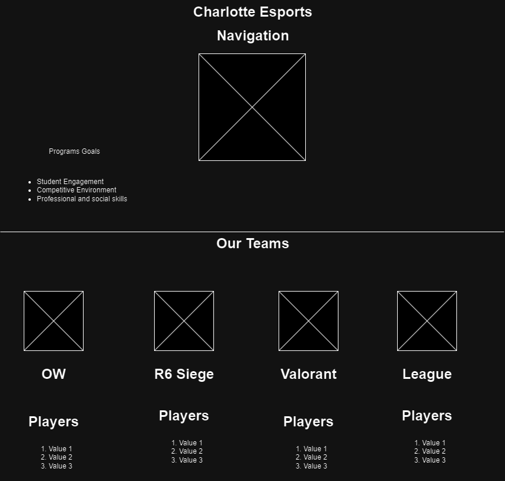

Project Overview
Charlotte Esports is a new venture from UNC Charlotte that allows students to compete in video games at a Varsity level. There will be pages dedicated to the Different Teams, Games, Staff, and Player Expectations.
Client Information
Name: Ian Escalante
Institution: UNC Charlotte
Email Address: iescalan@charlotte.edu
Phone Number: [private]
Wireframe/Site Map
Page Designs
Home Page: The first page people see. This page gives an overview of Charlotte Esports. Targeted UNC Charlotte Students interested in getting involved in esports. Shares the goals of the program. Users will not be asked to enter any data on this page. This page will include hyperlinks to the other pages on the site.
Games: The purpose of this page will be to list all of the games that Charlotte esports is currently competing in and for new students to see the games avalible for them to compte in. The audience is new students interested in esports. The page will include iamges of the games with their name and the systems that they are avalible to be play on. The iamges of the games will be hyper links that will link to the main website for the game as well as the links in the navigation bar. When a user clicks the image they will be re-directed to their chosen games homepage.
Our Teams: The purpose of this page is to show off the different teams we have competing in the different games. The audience for this page is fans of the games or new students that want to compete. The conrent of the page will be a list of the teams that exist as well as a search bar for specific teams. Yes users can input the name of a game and find the team in a search bar. The page will contain hyperlinks to team YouTube channels and a publicly avalible discord. Users can search as well as navigate to team specific pages and discords.
Our Players: The purpose of this page will be to list all of the players seperated by game. The audience is anyone interested in esports. The page will include a dropdown that allows user to select specific teams and see all of their players including a short bio and picture. As well as a search bar for finding specific players. Users will be asked to chose a team or search for specific players. THe page will include hyperlinks to the players social medias in their bio and a dropdown to select teams. The actions that occur on the page is a search function as well as a dropdown for selecting teams.
Our Staff: The purpose of this page will be to list all of the staff members associated with Charlotte esports. The audience for this page is any current player as well as anyone interested in esports at UNCC. The content will be pictures and a short bio of the staff members as well as a way to contact them. Users will nto be asked for input. THe onyl hyperlinks will be in the nav bar that is consistent across all pages.No actions will happen on this page.
Dynamic Functionality
The dynamic functionality present in my site will be mainly centered around the pictures of the games which will be used on the games page(used for easy access to the titles being referenced), search bars on the teams and players pages(easy navigation), and a photo gallery on the players page(show off experiences at tournaments or events).